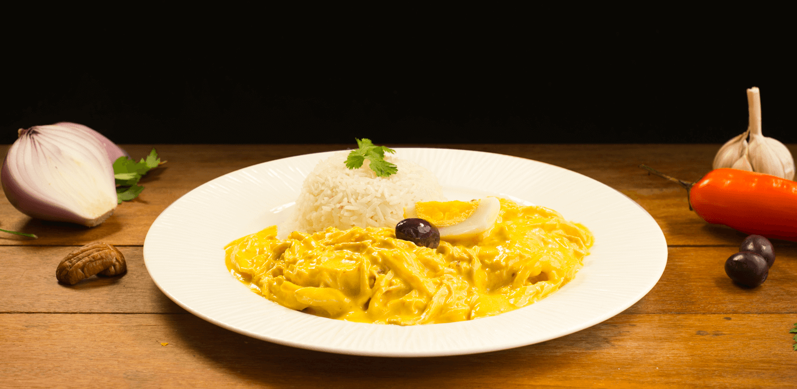

El aji de gallina, un plato típico de la gastronomía peruana, cautiva los paladares con su inigualable mezcla de cremosidad y picante, donde el pollo se deshace en una salsa de ají amarillo, queso y nueces, ofreciendo una experiencia culinaria que fusiona lo reconfortante y lo picante de manera excepcional.
Aji de Gallina
Receta
Ingredientes
- 500 gramos de pechugas de pollo, cocidas y desmenuzadas.
- 2 ajíes amarillos frescos, sin semillas ni venas, picados en trozos.
- 3 rebanadas de pan blanco sin corteza.
- 1 cebolla grande, picada finamente.
- 2 dientes de ajo, picados finamente.
- 1 taza de caldo de pollo.
- 1 taza de leche evaporada.
- 50 gramos de queso fresco (queso blanco) desmenuzado.
- 2 cucharadas de aceite vegetal.
- 4 papas amarillas cocidas y peladas.
- 4 huevos duros.
- Aceitunas negras.
- Sal y pimienta al gusto.
Instrucciones
- Preparar el ají amarillo: Lava los ajíes amarillos, quítales las semillas y venas, y córtalos en trozos pequeños. Puedes variar la cantidad de ají según tu preferencia de picante. Luego, licua los ajíes con un poco de caldo de pollo hasta obtener una pasta suave y homogénea.
- Hidratar el pan: En un tazón, coloca las rebanadas de pan y vierte suficiente caldo de pollo caliente sobre ellas para cubrirlo. Deja que el pan se remoje durante unos minutos hasta que esté suave. Luego, escúrrelo y resérvalo.
- Preparar la salsa: En una sartén grande, calienta el aceite vegetal a fuego medio. Agrega la cebolla picada y el ajo picado y cocina hasta que estén dorados y fragantes.
- Añadir la pasta de ají: Agrega la pasta de ají amarillo que hiciste en el paso 1 a la sartén con la cebolla y el ajo dorados. Cocina durante unos minutos, revolviendo constantemente, para que los sabores se mezclen bien.
- Incorporar el pan remojado: Agrega el pan remojado y escurrido a la sartén con la mezcla de ají y cebolla. Revuelve para incorporar bien todos los ingredientes.
- Agregar la leche y el queso: Vierte la leche evaporada en la sartén y mezcla hasta que la salsa comience a espesar. Luego, agrega el queso fresco desmenuzado y continúa cocinando hasta que la salsa esté suave y cremosa. Si es necesario, puedes agregar más caldo de pollo para obtener la consistencia deseada. Sazona con sal y pimienta al gusto.
- Mezclar con el pollo: Agrega el pollo cocido y desmenuzado a la salsa y mezcla bien. Cocina a fuego medio-bajo durante unos minutos para calentar el pollo en la salsa.
- Servir el aji de gallina: Sirve el aji de gallina caliente, acompañado de papas amarillas cocidas y cortadas en rodajas, huevos duros cortados por la mitad y aceitunas negras. Puedes decorar con perejil picado si lo deseas.
Tip:
El aji de gallina es un plato reconfortante y delicioso que combina la cremosidad de la salsa de ají amarillo con la suavidad del pollo desmenuzado. ¡Es una verdadera joya de la cocina peruana!